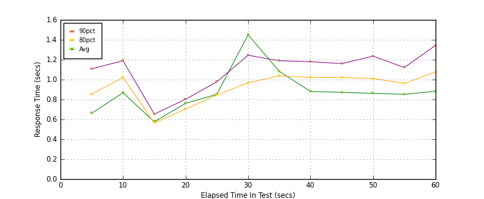
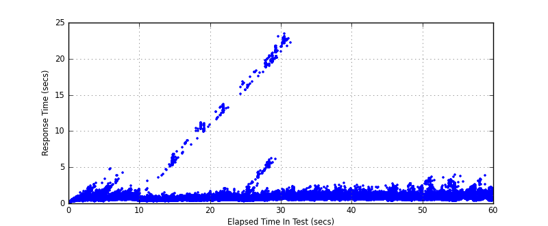
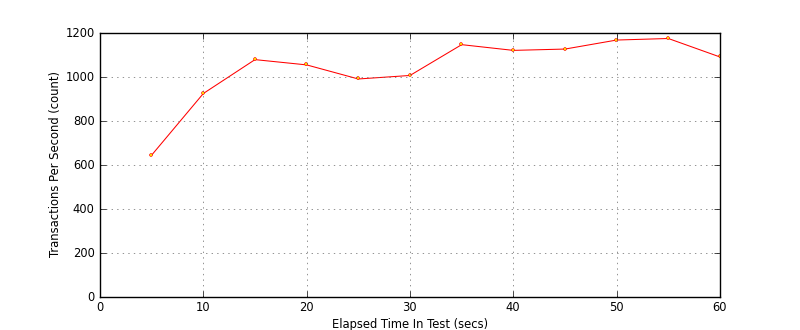

Performance Results Report
Summary
transactions: 63685
errors: 0
run time: 60 secs
rampup: 0 secs
test start: 2017-05-24 17:57:16
test finish: 2017-05-24 17:58:16
time-series interval: 5 secs
workload configuration:
| group name | threads | script name |
|---|
| user_group-21 | 40 | redis_stress.py |
| user_group-20 | 40 | redis_stress.py |
| user_group-23 | 40 | redis_stress.py |
| user_group-22 | 40 | redis_stress.py |
| user_group-25 | 40 | redis_stress.py |
| user_group-24 | 40 | redis_stress.py |
| user_group-2 | 40 | redis_stress.py |
| user_group-3 | 40 | redis_stress.py |
| user_group-1 | 40 | redis_stress.py |
| user_group-6 | 40 | redis_stress.py |
| user_group-7 | 40 | redis_stress.py |
| user_group-4 | 40 | redis_stress.py |
| user_group-5 | 40 | redis_stress.py |
| user_group-8 | 40 | redis_stress.py |
| user_group-9 | 40 | redis_stress.py |
| user_group-10 | 40 | redis_stress.py |
| user_group-11 | 40 | redis_stress.py |
| user_group-12 | 40 | redis_stress.py |
| user_group-13 | 40 | redis_stress.py |
| user_group-14 | 40 | redis_stress.py |
| user_group-15 | 40 | redis_stress.py |
| user_group-16 | 40 | redis_stress.py |
| user_group-17 | 40 | redis_stress.py |
| user_group-18 | 40 | redis_stress.py |
| user_group-19 | 40 | redis_stress.py |
All Transactions
Transaction Response Summary (secs)
| count | min | avg | 80pct | 90pct | 95pct | max | stdev |
|---|
| 63685 | 0.053 | 0.889 | 0.958 | 1.136 | 1.401 | 23.455 | 1.331 |
Interval Details (secs)
| interval | count | rate | min | avg | 80pct | 90pct | 95pct | max | stdev |
|---|
| 1 | 3228 | 645.60 | 0.056 | 0.662 | 0.854 | 1.108 | 1.385 | 2.828 | 0.350 |
| 2 | 4627 | 925.40 | 0.288 | 0.868 | 1.021 | 1.190 | 1.465 | 4.828 | 0.370 |
| 3 | 5398 | 1079.60 | 0.271 | 0.576 | 0.564 | 0.654 | 0.758 | 6.791 | 0.699 |
| 4 | 5278 | 1055.60 | 0.289 | 0.762 | 0.704 | 0.802 | 0.923 | 11.119 | 1.234 |
| 5 | 4959 | 991.80 | 0.282 | 0.852 | 0.845 | 0.978 | 1.133 | 16.810 | 1.404 |
| 6 | 5036 | 1007.20 | 0.317 | 1.450 | 0.968 | 1.245 | 4.841 | 23.083 | 3.355 |
| 7 | 5739 | 1147.80 | 0.368 | 1.083 | 1.038 | 1.189 | 1.421 | 23.455 | 2.177 |
| 8 | 5608 | 1121.60 | 0.376 | 0.881 | 1.022 | 1.180 | 1.372 | 2.750 | 0.253 |
| 9 | 5638 | 1127.60 | 0.362 | 0.872 | 1.020 | 1.161 | 1.304 | 2.476 | 0.232 |
| 10 | 5841 | 1168.20 | 0.328 | 0.862 | 1.011 | 1.236 | 1.641 | 2.725 | 0.353 |
| 11 | 5875 | 1175.00 | 0.357 | 0.852 | 0.961 | 1.121 | 1.558 | 3.885 | 0.394 |
| 12 | 5457 | 1091.40 | 0.337 | 0.882 | 1.079 | 1.344 | 1.656 | 3.801 | 0.372 |
Graphs
Response Time: 5 sec time-series

Response Time: raw data (all points)

Throughput: 5 sec time-series
